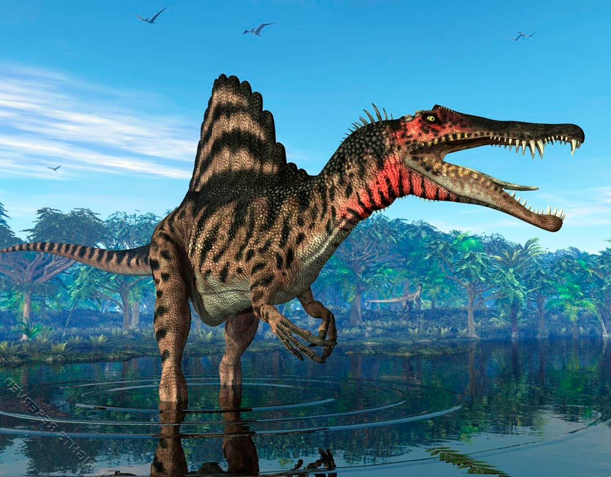

Спіноза́вр (лат. Spinosaurus, від spina — «голка» + дав.-гр. σαΰρος — «ящірка») — рід спінозаврових динозаврів, що був одним із найбільших наземних хижаків, які коли-небудь існували — 12-15 м завдовжки, вагою до 7,5 т.
Відомо, що спінозавр харчувався рибою, і більшість вчених вважають, що він полював як на наземну, так і на водну здобич. Докази свідчать про те, що він був напівводним, проте наскільки добре він був здатний плавати, залишається під питанням. Кістки ніг спінозавра мали ознаки остеосклерозу (підвищеної щільності кісткової тканини), що дозволяло б йому краще зберігати плавучість. Спинне вітрило могло виконувати різні функції, включаючи терморегуляцію та демонстрацію — або для залякування суперників, або для приваблення партнерів. Він жив у вологому середовищі приливних рівнин і мангрових лісів разом з багатьма іншими динозаврами, а також рибами, крокодиломорфними, ящірками, черепахами, птерозаврами та плезіозаврами.
У спінозавра була довга, вузька морда, дуже схожа на крокодилячу (звідси теорія про рибну дієту спінозавра). Верхня щелепа біля переднього кінця має звуження. Ці щелепи могли кусати із вагою приблизно 3-7 тонн.
Високий, сплющений з боків хвіст нагадує такий хвіст крокодилів або тритонів, і, ймовірно, дозволяв ефективно штовхати тіло вперед під час плавання.
Головною особливістю всіх спінозавридів було «вітрило» із відростків хребців на спині. У спінозавра воно було найбільшим із відомих, заввишки до 2 м.
